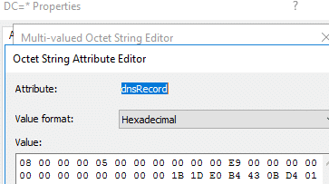

Node Tombstoning
Record cleanup isn’t as simple as just removing the node from LDAP. If you do, the record will hang around within the DNS server’s in-memory zone copy until the service is restarted or the ADIDNS zone is manually reloaded. The 180 second AD sync will not remove the record from DNS.
When a record is normally deleted in an ADIDNS zone, the record is removed from the in-memory DNS zone copy and the node object remains in AD. To accomplish this, the node’s dNSTombstoned attribute is set to ‘True’ and the dnsRecord attribute is updated with a zero type entry containing the tombstone timestamp.

Generating you own valid zero type array isn’t necessarily required to remove a record. If the dnsRecord attribute is populated with an invalid value, such as just 0x00, the value will be switched to a zero type array during the next AD/DNS sync.
For cleanup, I’ve created a PowerShell function called Disable-ADIDNSNode which will update the dNSTombstoned and dnsRecord attributes.
PS C:\Users\kevin\Desktop\Powermad> Disable-ADIDNSNode -Node * -Verbose
VERBOSE: [+] Domain Controller = Inveigh-DC1.inveigh.net
VERBOSE: [+] Domain = inveigh.net
VERBOSE: [+] ADIDNS Zone = inveigh.net
VERBOSE: [+] Distinguished Name = DC=*,DC=inveigh.net,CN=MicrosoftDNS,DC=DomainDNSZones,DC=inveigh,DC=net
[+] ADIDNS node * tombstoned
The cleanup process is a little different for records that exist as a single dnsRecord attribute line within a multi-record DNS node. Simply remove the relevant dnsRecord line and wait for sync/replication. Set-DNSNodeAttribute can be used for this task.
One note regarding tombstoned nodes in case you decide to work with existing records through either LDAP or dynamic updates. The normal record aging process will also set the dNSTombstoned attribute to ‘True’. Records in this state are considered stale, and if enabled, ready for scavenging. If scavenging is not enabled, these records can hang around in DNS for a while. In my test labs without enabled scavenging, I often find stale records that were originally registered by machine accounts. Caution should be taken when working with stale records. Although they are certainly potential targets for attack, they can also be overwritten or deleted by mistake.
Node Deletion
Fully removing the DNS records from both DNS and AD to better cover your tracks is possible.
The record needs to first be tombstoned.
Once the AD/DNS sync has occurred to remove the in-memory record, the node can be deleted through LDAP.
Replication however makes this tricky. Simply performing these two steps quickly on a single domain controller will result in only the node deletion being replicated to other domain controllers. In this scenario, the records will remain within the in-memory zone copies on all but one domain controller. During penetration tests, tombstoning is probably sufficient for cleanup and matches how a record would normally be deleted from ADIDNS. After a test (if the RoE allows), check if the client has enabled scavenging to clean up tombstoned records, or at least let the client know about tombstoned records that were created during the test.